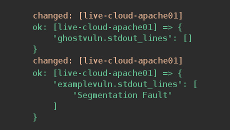

Testing for GHOST Vulnerability with Ansible

Yesterday, reports of a critical vulnerability in the GNU C Library (glibc) hit the news. If you have more then just a handful servers to check, this Ansible playbook might be helpful.
You can read all about the vulnerability here.
Usually when I have to check multiple servers, I use Ansible like this.
ansible 'servergroup' -m shell -a 'command to execute'
In the case of GHOST, this wasn't working for me as the test command contained both ' and " chars. Escaping them didn't seem to work either, so I wrote a small playbook to take care of it.
- hosts: hosts,or,groups,comma,separated
remote_user: sshuser
tasks:
- name: Check if host is vulnerable
shell: php -r '$e="0";for($i=0;$i<2500;$i++){$e="0$e";} gethostbyname($e);'
register: ghostvuln
- debug: var=ghostvuln.stdout_lines
That's it. If you've never used ansible before, just follow these steps.
-
install Ansible from your OS repository
-
add hosts to /etc/ansible/hosts
[groupname] host1 host2 -
Make sure your SSH key is loaded with
ssh-add -L -
Test if Ansible reaches every hosts
ansible 'group,or,hosts' -m shell -a 'hostname -f' -
Execute Ansible playbook
ansible-playbook /path/to/playbook
If you get either one of these, everything is fine.

changed just means that the command could be executed, check further down for the result. As you can see in the second image, the command did not return Segmentation Fault
failed means, that the could not be executed, in this case because php isn't installed.
This is ans example of a vulnerable host returning a segfault message.
Note: The check command above uses PHP, which I don't have installed on all my servers. Since this is a glibc vulnerability, I'm pretty sure that hosts can be vulnerable even if PHP is not installed. I will update this post if I find a way to check servers without PHP. Until then, install php5-cli if you don't have php on the system.
Update 1: More info on this bug can be found here, including how to get a list of services that use glibc (Debian/Ubuntu)
sudo lsof | grep libc | awk '{print $1}' | sort | uniq
Also, make sure to reboot the servers after you've installed the patches or the server will remain vulnerable!
Update 2: An easier way to check if your server is vulnerable, is to check for the glibc version by running the following command.
$ ldd --version
ldd (Ubuntu EGLIBC 2.19-0ubuntu6.4) 2.19
Copyright (C) 2014 Free Software Foundation, Inc.
This is free software; see the source for copying conditions. There is NO
warranty; not even for MERCHANTABILITY or FITNESS FOR A PARTICULAR PURPOSE.
Written by Roland McGrath and Ulrich Drepper.
$ ansible 'servergroup' -m shell -a 'ldd --version |grep "^ldd"'
According to Tomas Hoger, the issues was fixed in glibc 2.18.
source: bugzilla.redhat.com